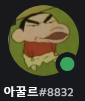

성격 전체적으로 방어적이다.
장점 같이 게임하면 정보가 넘친다. 귀엽다. 개판으로 말해도 받아주는 편이다. 귀여운 것 같다. 귀여운 편이다. 귀여운 것 같기도?
단점 나랑 노는 걸 피곤해한다. 꼴받는 편. 같이 게임하면 혼자 질주하는 편이다. 예민한 편인데 본인에 관해 부정적인 면이 있다. 귀엽다.
특징 오리너구리 같다. 본인의 귀여운 외형을 믿고 사는 것 같다. 승부욕이 있다. 입에 들어갈 수 있는게 연어덮밥 밖에 없는 줄 안다. 호숫가에 비친 느낌의 그림을 자주 그려보여준다. 좋긴한데 완성본을 안 보여주는 편.

귀여운 녀석
작성자 비밀공주